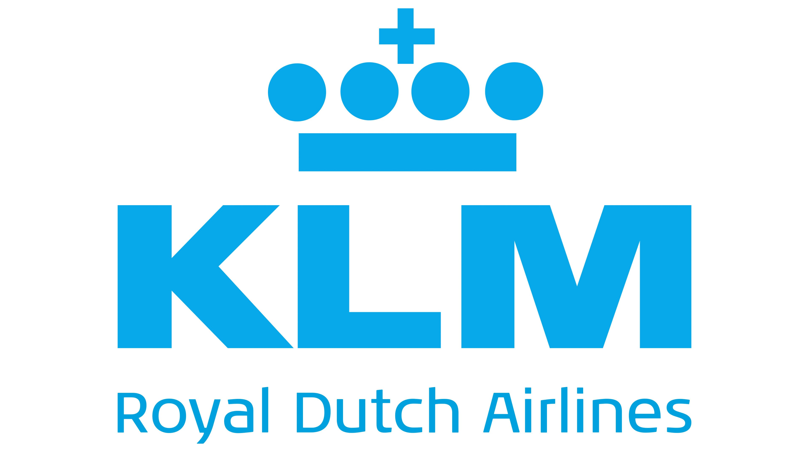
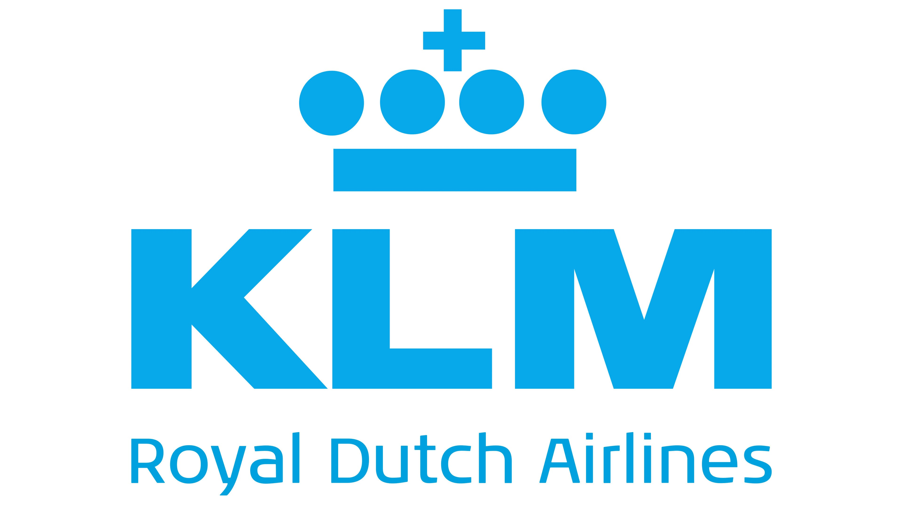
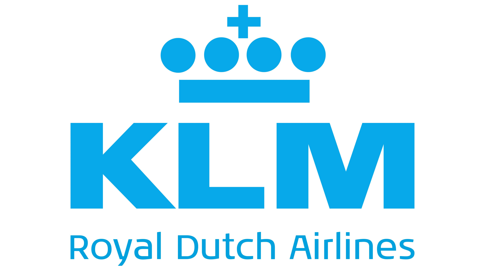

In collaboration with:

 


In collaboration with:

The Maastricht Policy Hackathon brings together students, researchers, and professionals from diverse backgrounds to tackle real-world policy challenges using data, technology, and creative thinking.
Over an intensive weekend, participants work in interdisciplinary teams to analyze complex societal problems, develop evidence-based solutions, and translate insights into actionable policy recommendations.
Guided by mentors from academia, industry, and public institutions, teams gain hands-on experience at the intersection of policy, data science, and innovation — while competing for prizes and recognition.